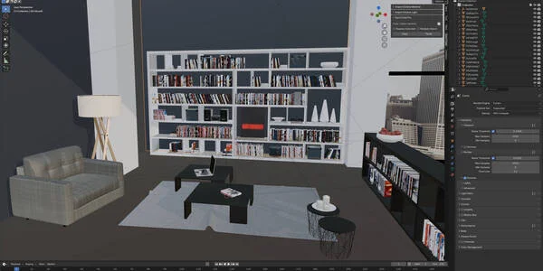
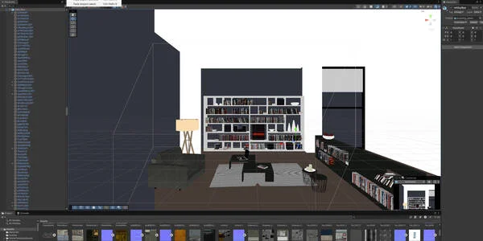
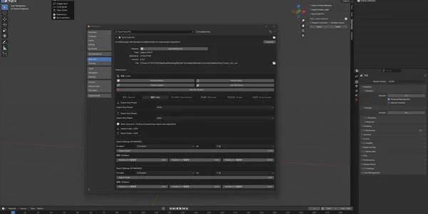
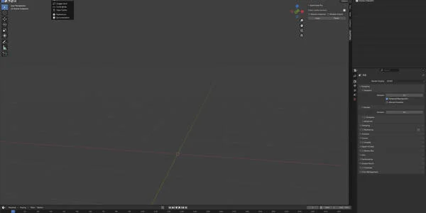
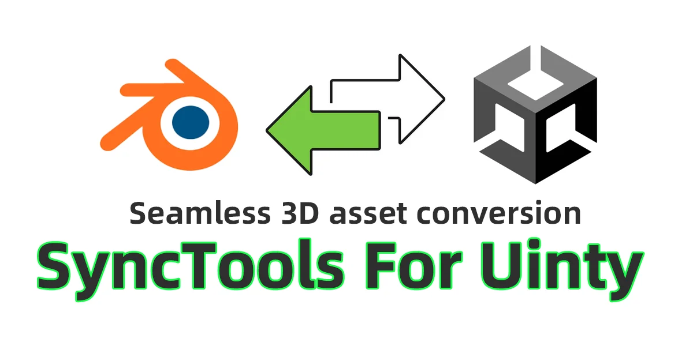
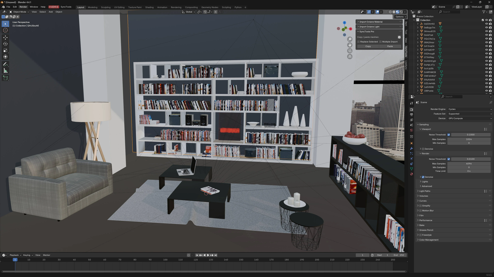
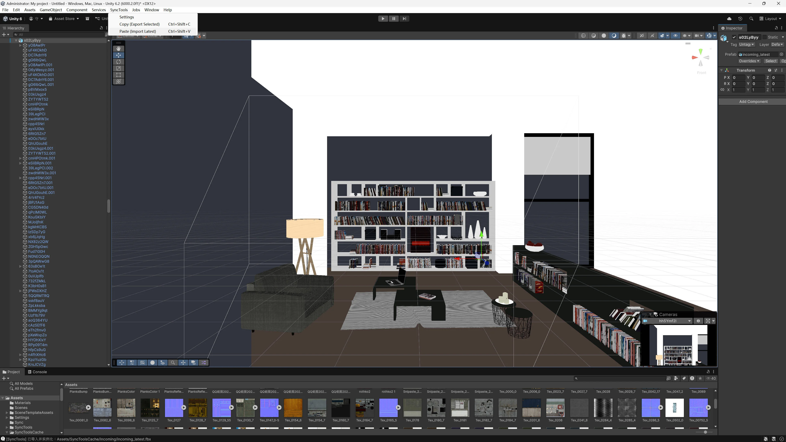
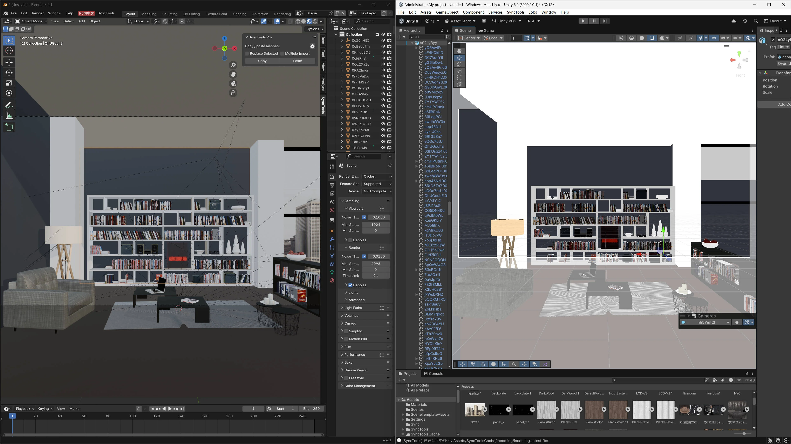
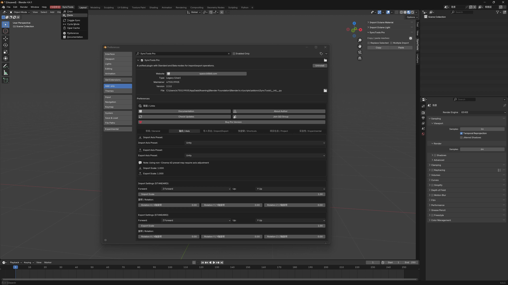

SyncTools Pro 是一款跨软件工具，旨在简化不同应用程序之间复制和粘贴场景数据的流程。只需一键即可将物体（包括网格、灯光、摄像机、材质、动画等）从一个场景导出并导入到另一个场景中，大幅节省生产流程中的时间和精力。

SyncTools 系列现已扩展支持主流数字内容创作软件，包括：
✅ SyncTools for Maya（已发布）
✅ SyncTools for 3ds Max（已发布）
✅ SyncTools for Houdini（已发布）
✅ SyncTools for Cinema 4D（已发布）
✅ SyncTools for Rhino（已发布）
✅ SyncTools for Marvelous Designer（已发布）
✅ SyncTools for Unity（已发布）
✅ SyncTools for Substance Painter（已发布）
✅ SyncTools for Unreal Engine（已发布）
✅ SyncTools for Zbrush（已发布）
所有插件采用统一的数据交换协议，实现跨平台无损资产转换以及真正的多软件协作工作流。



SyncTools for Unity 专注于在 Unity 与外部工具之间快速交换场景数据，适用于以下工作流：
将 DCC 工具中的布局/灯光/摄像机设置导入 Unity
将选定的 Unity 场景对象发送至其他 DCC 工具进行精细调整
在 Unity 与外部工具之间快速迭代，无需手动重建场景
注意：SyncTools 传输受支持的场景数据。Unity 特有的组件和行为在导入后可能仍需手动设置。

前提条件
Unity 版本：2020.3 LTS 及更高版本
推荐：2021.3+ / 2022.3+ / 2023.x
必需包：FBX Exporter（com.unity.formats.fbx）
安装 FBX Exporter 包
打开 Unity 编辑器 → Window > 包管理器
点击左上角 + → 通过 git URL 添加包
输入：com.unity.formats.fbx
或在 Unity Registry 中搜索 FBX Exporter 并安装
等待安装完成
安装 SyncTools 插件
将 SyncTools 文件夹复制到：Assets/
Unity 自动编译脚本，安装完成
在 Unity 菜单栏中即可找到 SyncTools
打开设置窗口
Unity 菜单栏 → SyncTools > 设置
配置选项
缓存路径（缓存 路径）
指定用于复制/粘贴交换的缓存目录。
默认：文档s/cache
必须与 Blender/Maya 端使用的缓存路径一致
导入文件夹（导入 文件夹）
指定导入的资产在 Unity 项目中的存储位置。
必须以 Assets/ 开头
默认：Assets/SyncTools缓存/Incoming
导入后删除缓存文件（删除 缓存 文件s after 导入）
启用后，粘贴完成后自动删除临时缓存文件。
默认：启用
设置导入摄像机近裁剪面（设置 导入 Camera Near Clip）
启用后，导入的摄像机将自动应用近裁剪面数值。
近裁剪面数值（Near Clip 值）
摄像机设置启用时使用。
默认：1.0
✅ 更改内容自动保存至 Unity 编辑orPrefs。
选择要复制的 Game对象（在层级面板或场景视图中）
使用 SyncTools > 复制 (导出 Selected)
快捷键：Ctrl+Shift+C（Windows）/ Cmd+Shift+C（Mac）
SyncTools 将选中内容导出到共享缓存，供其他 DCC 软件使用。
切换到目标场景
使用 SyncTools > 粘贴 (导入 Latest)
快捷键：Ctrl+Shift+V（Windows）/ Cmd+Shift+V（Mac）
SyncTools 导入最新的缓存数据，应用设置（如已启用），并清理临时文件（如已启用）。
✅ 所有操作均支持 Unity 撤销。
官方支持
Unity 2021.3 LTS / 2022.3 LTS / 2023.x
Blender 4.0+
实验性支持
Unity 2020.3 LTS（部分功能可能受限）
必需包
FBX Exporter（com.unity.formats.fbx）
最低版本：7.1.0
推荐：最新稳定版
✔ 基础几何体（网格）
✔ 变换层级
✔ 核心材质属性（PBR 工作流）
✔ 点光源 / 聚光灯 / 平行光
✔ 基础动画关键帧
✔ 摄像机参数（FOV / 焦距）
⚠ 复杂着色器节点（自动转换为 Unity 标准材质）
⚠ 骨骼动画（需要匹配 Unity Avatar 系统）
⚠ UV 贴图（支持标准 UV 通道）
⚠ 法线贴图（可能需要在导入设置中启用）
✖ Unity 特有组件（碰撞体、刚体等——需手动添加）
✖ 粒子系统
✖ 物理约束
✖ 自定义着色器
✖ 程序化内容
1️⃣ 缓存路径同步
确保 Unity 端的缓存路径与 Blender/Maya 使用的缓存路径一致，否则交换将失败。
2️⃣ FBX Exporter 依赖
插件依赖 Unity 的 FBX Exporter。若未安装，复制操作将失败并提示安装。
3️⃣ 导入文件夹规则
导入文件夹必须以 Assets/ 开头，否则导入将失败。
4️⃣ 命名规范
特殊字符（如 @ # %）可能导致导入问题。重复名称会自动处理。
5️⃣ 插件依赖
为获得最佳效果，请在所有受支持的 DCC 应用中使用相同版本的 SyncTools。（请查阅版本说明了解兼容性更新。）
SyncTools Pro 为从其他 DCC 软件向 Unity 传输场景数据提供了流畅的复制/粘贴工作流。借助简单的操作和一致的设置，您可以高效交换详细的场景内容，保持生产进度。
如需进一步协助，欢迎随时联系我们。
我们相信回馈让我们的工作成为可能的社区。每个月，我们都会将插件收入的一部分捐献给 Blender 基金会。感谢您帮助我们为开源创作的未来贡献力量。
打开 Unity 编辑器
进入 Window > 包管理器
点击左上角 + 按钮，选择通过 git URL 添加包
输入：com.unity.formats.fbx
或在 Unity Registry 中搜索 FBX Exporter 并安装
等待安装完成
将 SyncTools 文件夹复制到 Unity 项目的 资产s 目录中
Unity 将自动编译。完成后，顶部菜单栏中将出现 SyncTools 菜单
打开 SyncTools > 设置
设置缓存路径（缓存 路径）
默认：文档s/cache
⚠️ 重要：必须与 Blender/Maya 使用的缓存路径一致
设置导入文件夹（导入 文件夹）
默认：Assets/SyncTools缓存/Incoming
必须以 Assets/ 开头
选择对象
在 Unity 中，在层级面板中选择要导出的 Game对象
复制（导出选中内容）
菜单：SyncTools > 复制 (导出 Selected)
快捷键：Ctrl+Shift+C（Windows）或 Cmd+Shift+C（Mac）
完成
导出的数据已保存至缓存目录
现在可以在 Blender/Maya 端进行粘贴/导入
确认缓存路径一致
确认 Unity 的缓存路径与 Blender/Maya 的相同
粘贴（导入最新内容）
菜单：SyncTools > 粘贴 (导入 Latest)
快捷键：Ctrl+Shift+V（Windows）或 Cmd+Shift+V（Mac）
完成
最新的缓存内容被导入并实例化到场景中
对象名称和层级结构自动恢复
用途：存储用于复制/粘贴交换的缓存文件
默认：文档s/cache
要求：必须与 Blender/Maya 使用的路径相同
用途：导入的资产在 Unity 项目中的存放位置
默认：Assets/SyncTools缓存/Incoming
要求：必须以 Assets/ 开头
用途：粘贴成功后自动清理缓存文件
默认：启用
建议：保持启用，防止缓存文件夹不断增大
用途：自动为导入的摄像机设置近裁剪面
默认：启用，数值为 1.0
使用场景：避免 Unity 中过小的近裁剪面值导致的渲染问题
| 操作 | Windows | Mac |
|---|---|---|
| 复制 | Ctrl+Shift+C | Cmd+Shift+C |
| 粘贴 | Ctrl+Shift+V | Cmd+Shift+V |
自定义快捷键：Unity 菜单 编辑 > Shortcuts
1. Unity：选择对象 → 复制（Ctrl+Shift+C） 2. Blender：打开目标场景 → 粘贴操作 3. 完成：对象已导入 Blender 1. Maya：选择对象 → 复制操作 2. Unity：打开目标场景 → 粘贴（Ctrl+Shift+V） 3. 完成：对象已导入 Unity 场景 1. Unity → Blender（编辑材质） 2. Blender → Unity（预览效果） 3. Unity → Blender（继续调整） ...根据需要重复 解决方案：
确认 FBX Exporter 包已安装
在 包管理器 中搜索并安装 com.unity.formats.fbx
解决方案：
确认缓存路径与 Blender/Maya 一致
确保已在 Blender/Maya 端执行了复制/导出操作
检查缓存文件夹中是否存在 export_*.fbx 文件
解决方案：
确认缓存目录中存在 hierarchy.txt
检查该文件是否被其他进程锁定或已损坏
解决方案：
检查文件内的材质/贴图路径
确保贴图文件位于预期目录中
在 Unity Inspector 中检查 FBX 导入的材质设置
✅ 缓存路径必须一致（Unity、Blender、Maya 三端）
✅ Unity 端必须安装 FBX Exporter
✅ 命名规则：避免使用特殊字符（如 @#%）
✅ 版本一致性：在所有平台使用相同版本的 SyncTools
✅ 支持撤销：所有操作均支持 Unity 撤销（Ctrl+Z）
✅ 官方支持：2021.3 LTS / 2022.3 LTS / 2023.x
⚠️ 实验性：2020.3 LTS
最低版本：7.1.0
推荐：最新稳定版
如遇到问题：
查看 Unity 的控制台以获取错误信息
确认所有应用中的插件版本一致
检查缓存路径设置是否正确
SyncTools Pro——让跨软件协作更轻松！ 🎨🚀